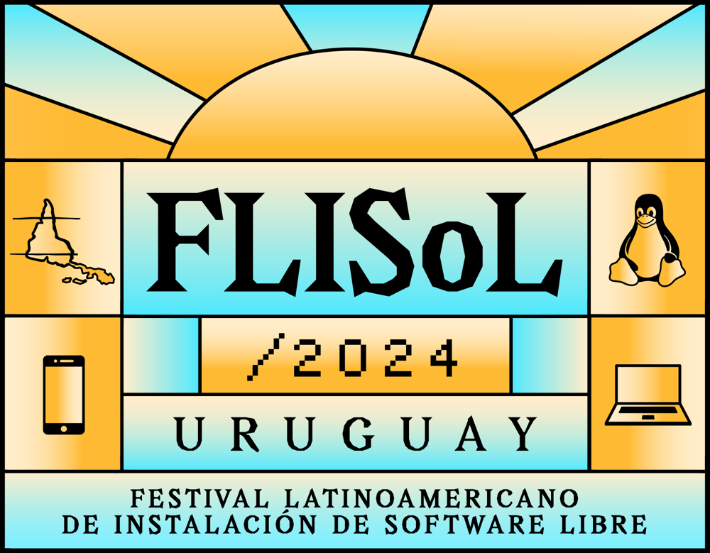
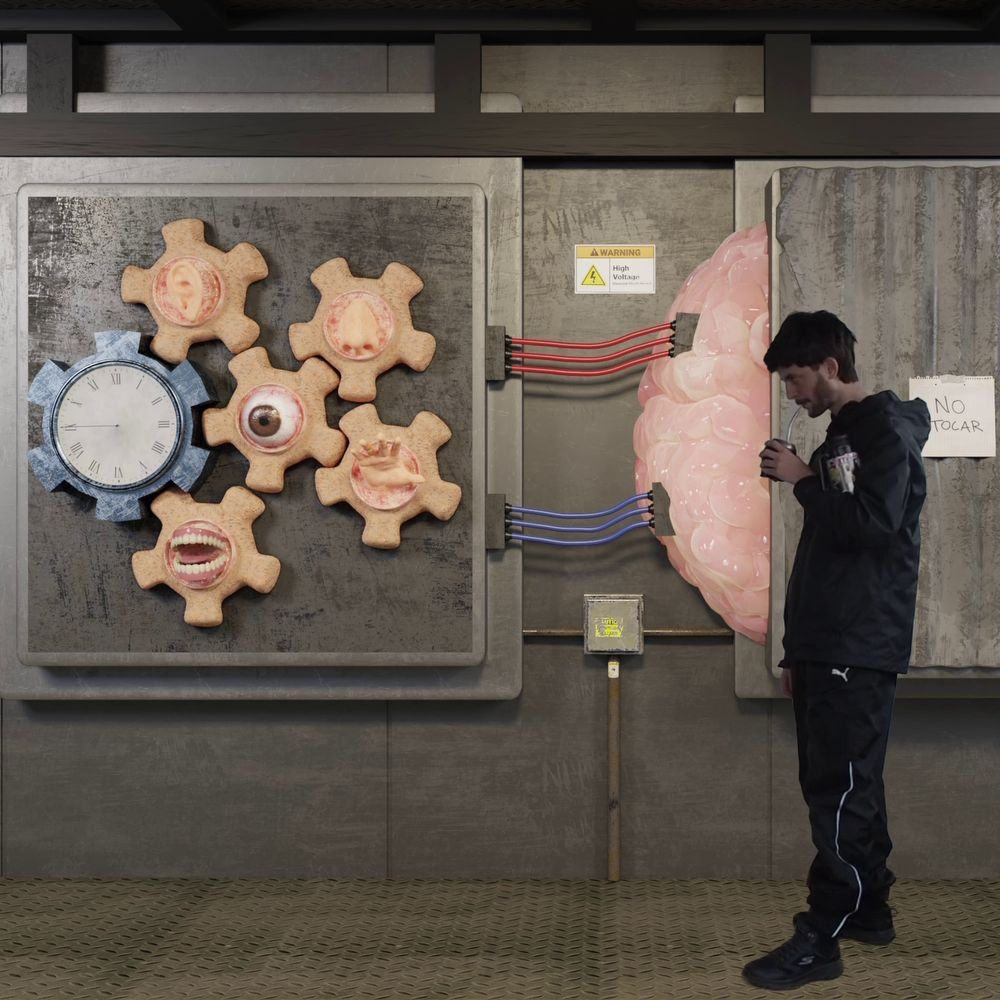
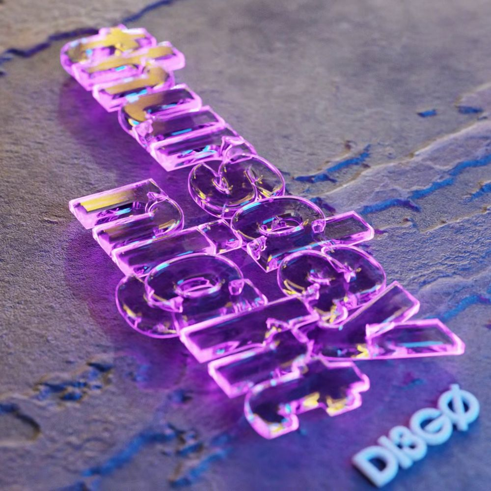
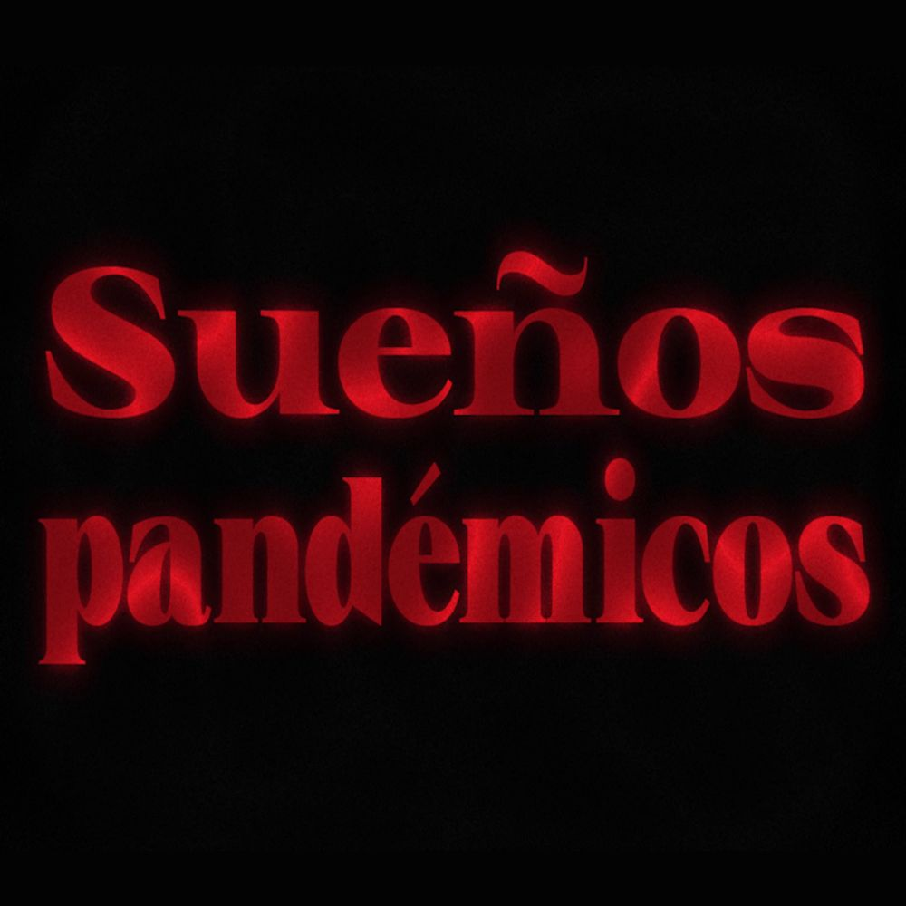
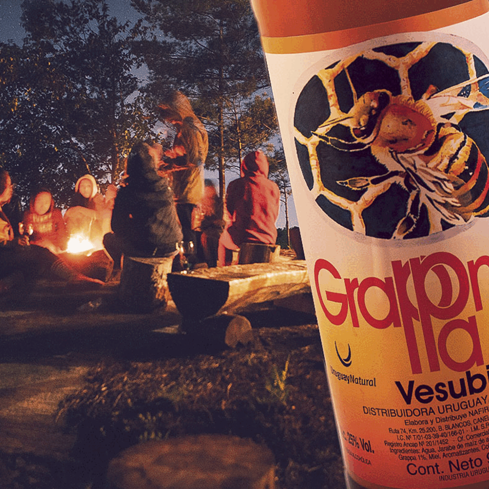
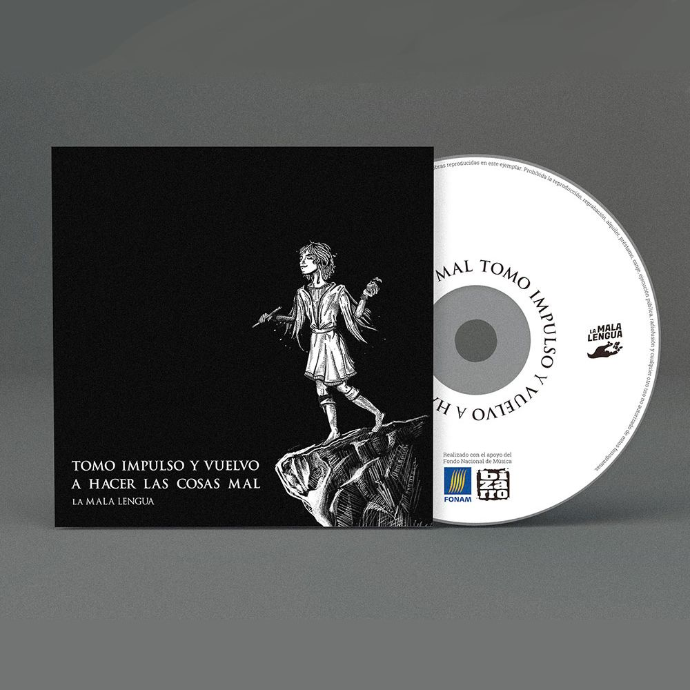
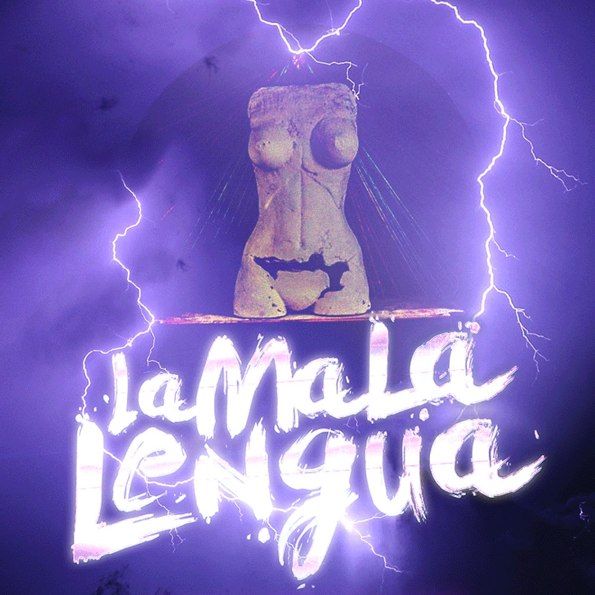
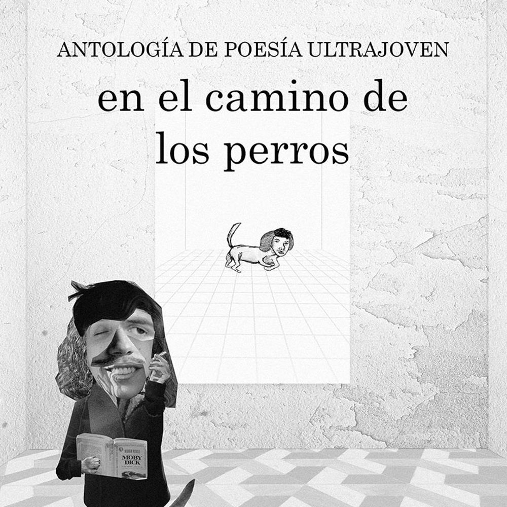

Trabajos
Tipo
Interés
Año
3er Encuentro de Construcción con Tierra

Identidad gráfica para la tercera edición del Encuentro de Construcción con Tierra, organizado por el Centro Universitario de Tacuarembó y la Facultad de Arquitectura Diseño y Urbanismo, de la Universidad de la República (Udelar).
#gráfica #académico #2024
FLISoL Uruguay 2024
Identidad gŕafica para el evento FLISoL Montevideo 2024, el Festival Latinoamericano de Instalación de Software Libre. Organizado de forma voluntaria por militantes del software libre.
#grafica #personal #2024
Día internacional sin autos - Colectivo Ciudad Abierta

Participación en la convocatoria del Colectivo Ciudad Abierta a artistas visuales a reimaginar lugares de nuestras ciudades con foco en la movilidad sostenible y las personas en el centro.
Un fotomontaje realizado con Blender y otras imaginaciones hechas con Dall-E.
#imagen #3d #ia #personal #2023
Audiovisual y patrimonio - Hackear el archivo

Participación en el curso espacio de práctica integral "Audiovisual y patrimonio: hackear el archivo" del programa APEX, Udelar.
Se trabajó sobre el territorio del Cerro (Montevideo) a partir de sus archivos de imágenes utilizando técnica de remix y otras asociadas a la técnica del videomapping para dinamizar, interpretar, resignificar el patrimonio y la memoria mediante el desarrollo de instalaciones audiovisuales en el espacio público o espacios vinculados a la memoria y la cultura.
#audiovisual #3d #videomapping #académico #2023
Algoritmo
Corto narrativo contemporáneo. Entorno y elementos 3D realizados en Blender.
#audiovisual #3d #personal #2023
Thursday Night - Diego Rodríguez
Tapa de disco y visualizador en video para álbum de música. Realizado en Blender.
#audiovisual #3d #comercial #2023
Sueños pandémicos
Corto escrito y producido a partir de un sueño en pandemia.
#audiovisual #personal #2023
Equipo Tierra - FADU UdelaR

Sistema de identidad visual para el Equipo Tierra de la Facultad de Arquitectura Diseño y Urbanismo, de la Universidad de la República (Udelar).
#gráfica #académico #2022

El fenómeno de los barrios privados en Uruguay

Trabajo realizado en el Taller de diseño de comunicación visual 5.
#gráfica #académico #2022
Ediciones y Fotomontajes varios
Resumen de ediciones fotográficas y fotomontajes con sus detrás de escena.
#imagen #comercial #2022
Buceo

Proyecto realizado en el Taller de diseño de comunicación visual 4 en conjunto con Cristian Recoba.
#gráfica #académico #2021
Tomo impulso y vuelvo a hacer las cosas mal
Diseño gráfico para el último disco de La Mala Lengua.
#gráfica #comercial #2019
La Mala Lengua
Resumen de todo lo trabajado para la banda de rock La Mala Lengua.
#imagen #audiovisual #comercial #2019
En el camino de los perros
Serie de afiches para el encuentro de poesía EECDLP.